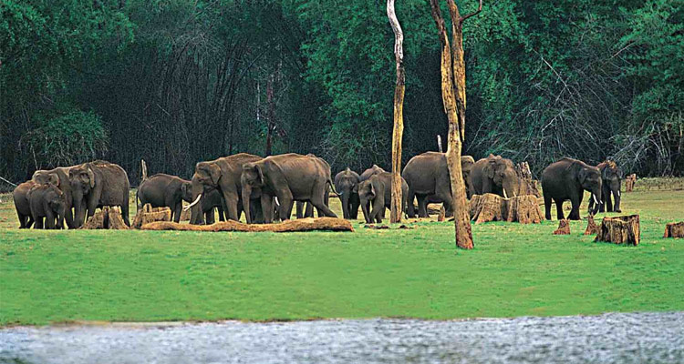

IDUKKI
Idukki district is a densely forested, mountainous region in the south Indian state of Kerala. In the north, Anamudi mountain towers over Eravikulam National Park, where the rare, blue Neelakurinji flower blooms every 12 years. Nearby, Munnar is a hill station known for its sprawling tea plantations and Tea Museum. Farther south is the vast, curved Idukki Dam and Periyar National Park, a tiger and elephant reserve.

MUNNAR
Munnar an enchanting hill station with enclosed calm of serenity and beauty draws thousands of tourists from different parts of the world. This heavenly beautiful hill station of Kerala situated at an altitude of about 1600 meter from the sea level was once the summer resort of British government in South India. The colonial Bungalows in Munnar reflects the glorious past of the place.
The pleasant climate and the laid back attitude of the hills made it an ideal holiday spot. The cool climate and the romantic ambiance of Munnar made it one of the most preferred honeymoon destination in South India. Munnar lies at Idukki district in the confluence of three rivers Muthirapuzha, Nallathanni and Kundala.

Ilaveezhapoonchira
Ilaveezhapoonchira situated atop Kudayathoor Mala is one of the most excellent places in Idukki district of Kerala to witness the sunrise and sunset. Ilaveezhapoonchira literally means pond of flowers atop a hill where no leaves fall. This is true as there is no trees around and only green grassland. This is a wonderful picnic spot situated in the midst of the fabulous hillocks.
The velvet valleys of Ilaveezhapoonchira spreads across thousands of acres.The green landscape punctuated by gigantic hills with enclosed calm and serenity is an ideal place to relax. This beautiful spot is surrounded by three enchanting hillocks Mannakunnu, Kodayathoormala and Thonippara.

Chinnar Wildlife Sanctuary
Chinnar Wildlife Sanctuary is an important destination in Idukki. Unlike other wildlife sanctuaries of Kerala Chinner gets barely scanty rainfall every year. This sanctuary is a distinct thorny scrub forest, consisting of several xerophytes species.
Chinnar is also a famous dwelling of the country's endangered Giant Grizzled Squirrel. This sanctuary also offers you the sight of elephants, spotted deer, sambar, hanuman monkeys, and more. This sanctuary will be an unforgettable experience for all.

Peerumedu
Peerumedu is a small beautiful hill station, snuggled at an altitude of 914 m above sea level, on way to Thekkady. This famous plantation town is rich with Coffee, tea, pepper, cardamom and rubber.
Peerumedu is the most fertile and wonderful part of Western Ghat. The stunning waterfalls and verdant grasslands in Peerumedu attracts so many tourists to this part of Idukki. This cool wonderful land is an amazing sight to visit.